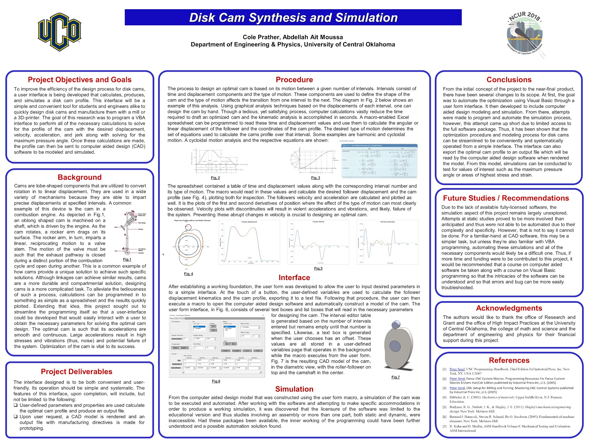

Overview
Cams are among the most elegant solutions in mechanical engineering: simple rotating lobes that convert rotational motion into precisely controlled linear displacement. From engine valve trains to industrial automation, cam mechanisms achieve motion profiles that would be difficult or impossible with alternative linkages. Yet the design process is notoriously complex, involving competing geometric and dynamic constraints. Commercial cam design software exists—but at significant cost, limiting access for educational institutions and individual engineers. In 2017, I developed a custom cam design and optimization tool in Visual Basic for Applications (VBA), creating an affordable, accessible alternative that enables engineering students to design, analyze, and manufacture cams without expensive proprietary software.
Technical Implementation
The system consists of a user-friendly VBA interface in Microsoft Excel combined with a comprehensive macro that performs all geometric, kinematic, and dynamic calculations. Users input the desired follower displacement profile (the motion they want to achieve), and the system automatically calculates the required cam geometry, including the precise coordinates of the cam profile. The macro then computes position, velocity, acceleration, and jerk (rate of change of acceleration) across the full rotation cycle. These outputs are critical for design verification: smooth acceleration profiles minimize forces and vibration, while rapid changes cause stresses and noise that degrade reliability. The tool provides real-time visualization through animated plots showing how the cam profile produces the desired motion, and instantaneously exports the cam geometry to CAD software (SolidWorks) for further analysis and visualization.
Manufacturing Integration
What distinguishes this tool from purely theoretical design packages is its bridge between simulation and physical reality. Once a designer selects an optimized cam configuration, a single button click generates G-code—the machine instructions required for 3D printing and CNC machining. This integration transforms the tool from an educational curiosity into a practical engineering instrument: students can progress from theoretical design through numerical optimization to holding a manufactured part in minutes. The combination of affordability, educational clarity, and direct manufacturability makes this tool valuable both as a learning resource and as a practical engineering instrument for small-scale production and rapid prototyping.
{kind=link}
